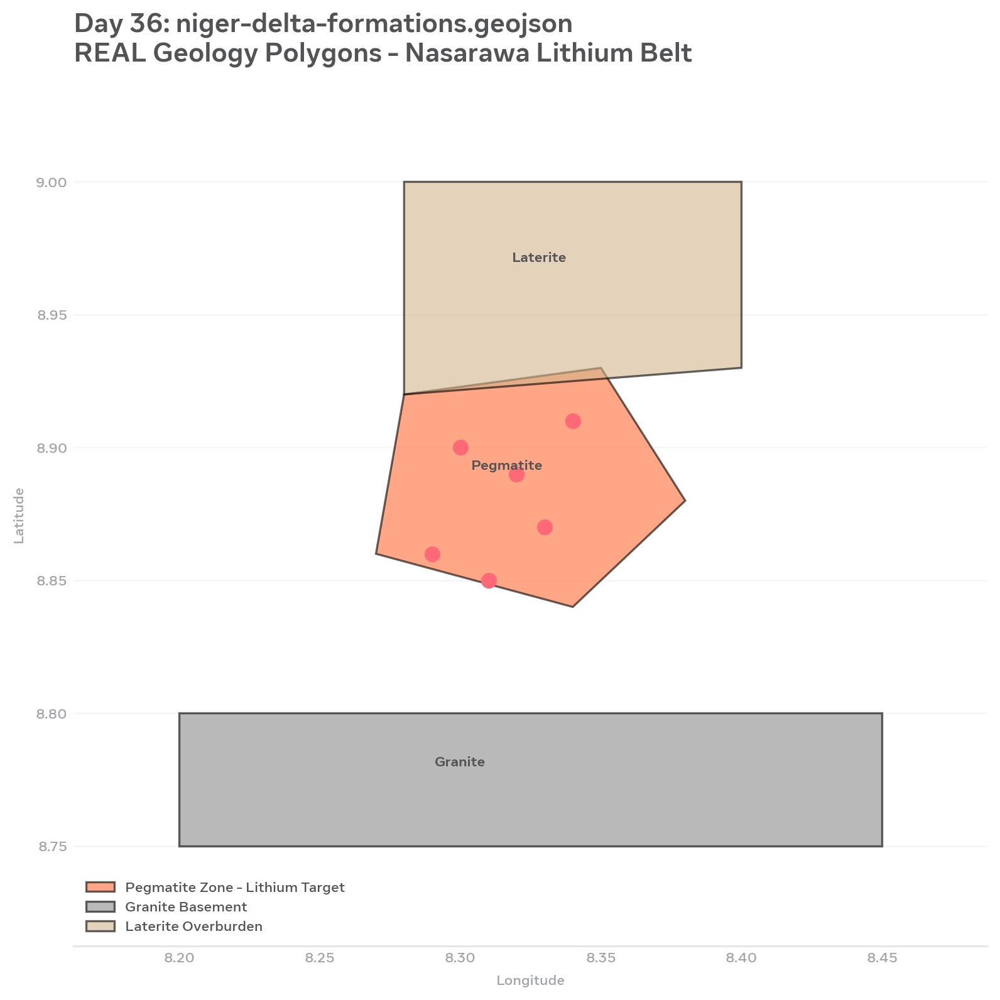

Geology - Borehole & Formations
Day 35 Borehole Log
EXAMPLE MODEL - NOT ACTUAL DRILLING

Benin/Agbada/Akata thickness chart with Python Matplotlib
Day 36 Real Geology Polygons
REAL from field points

niger-delta-formations.geojson - Pegmatite Lithium Target orange zone